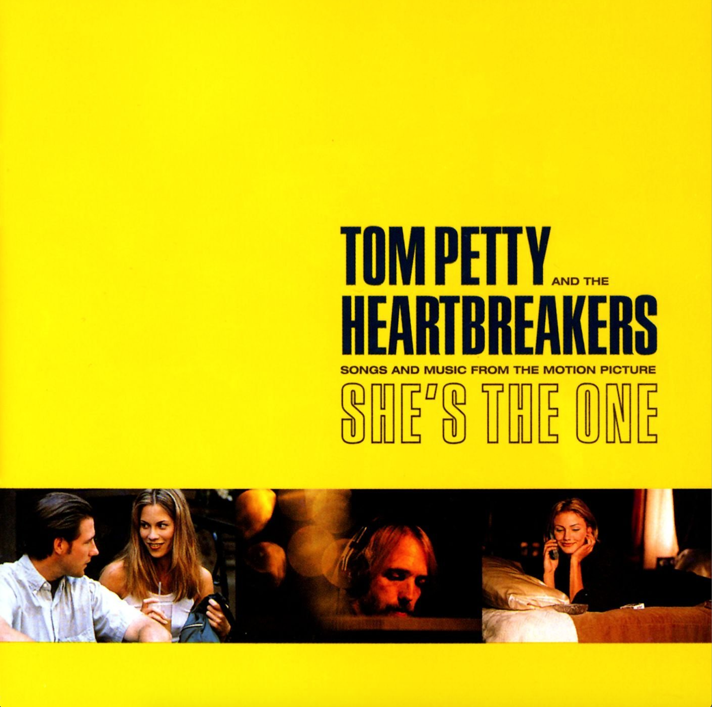

She's The One
Tom Petty & The Heartbreakers


Tom Petty & The Heartbreakers follow their triple-Platinum Wildflowers with this album produced by Rick Rubin. The album came about as a result of Petty's being invited to contribute a single song to the film's soundtrack. But Petty was so taken with the film that it quickly inspired a major bout of songwriting. What was supposed to be one song quickly became five and then became an entire album. Though it was inspired by the movie, this is no mere soundtrack: it's a new Tom Petty album!!!
- Walls (Circus)
- Grew Up Fast
- Zero From Outer Space
- Climb That Hill
- Change the Locks
- Angel Dream (No. 4)
- Hope You Never
- Asshole
- Supernatural Radio
- California
- Hope on Board
- Walls (nO. 3)
- Angel Dream (No.2)
- Hung Up and Overdue
- Airport